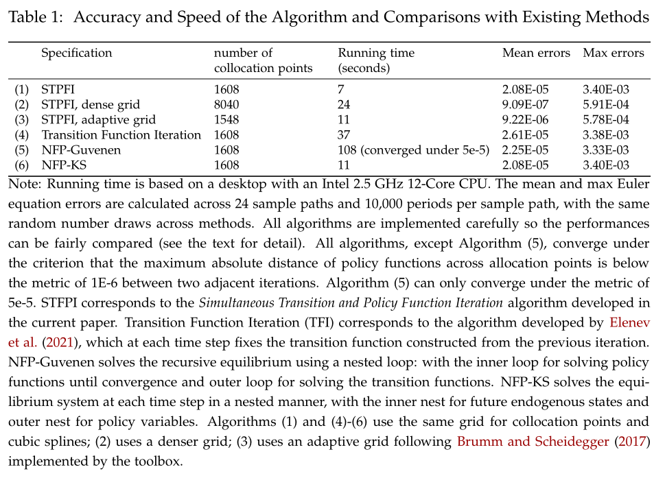
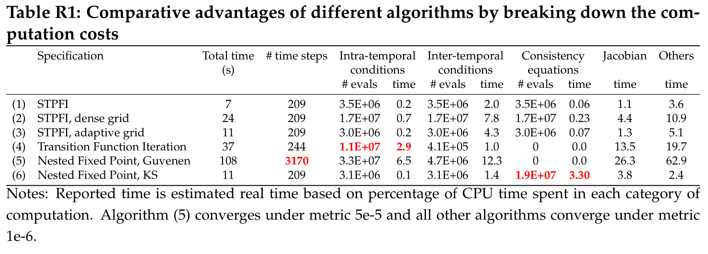

Heaton and Lucas (1996): Incomplete Markets with Portfolio Choices
The benchmark model in Heaton and Lucas (1996) is a good starting point to demonstrate the capability of the current framework in dealing with endogenous state variables with implicit law of motions. The model encompasses many ingredients that appear in recent macroeconomic studies, such as incomplete markets, portfolio choices, occasionally binding constraint, non-stationary shock process, and asset pricing with non-trivial market-clearing conditions. We show how the model can be solved with wealth share or consumption share as the endogenous state, which are the two prominent approaches in the literature and naturally fit in our toolbox framework.
The Model
This is an incomplete-markets model with two representative agents \(i\in\mathcal{I}=\{1,2\}\) who trade in equity shares and bonds. The aggregate state \(z\in\boldsymbol{Z}\), which consists of capital income share, agents’ income share, and aggregate endowment growth, follows a first-order Markov process. \(p_{t}^{s}(z^t)\) and \(p_{t}^{b}(z^t)\) denote share price and bond price at time \(t\) and in shock history \(z^t=\{z_0,z_1,\dots,z_t\}\). To simplify the notations, we omit the explicit dependence on shock history.
Agent \(i\) takes the share and bond prices as given and maximizes her inter-temporal expected utility
subject to
and
where \(Y^a_t\) denotes the aggregate income. \(d_t = \delta_t Y^a_t\) is total dividend (capital income) and \(Y^i_t = \eta^i_t Y^a_t\) is labor income of agent \(i\). Aggregate income grows at a stochastic rate \(\gamma^a_t = \frac{Y^a_t}{Y^a_{t-1}}\). \(z_t = \{\gamma^a_t,\delta_t,\eta^1_t\}\) follows a first-order Markov process estimated using U.S. data. The borrowing limit is set to be a constant fraction of per capita income, i.e., \(K^b_t = \bar{K}^b Y^a_t\).
In equilibrium, prices are determined such that markets clear in each shock history:
We use the financial wealth share
as an endogenous state variable. In equilibrium, the market clearing conditions imply that \(\omega^1_t + \omega^2_t = 1\).
For any variable \(x_t\), let \(\hat{x}_t\) denote the normalized variable: \(\hat{x}_t=\frac{x_t}{Y^a_t}\) (except \(b^i_t\) for which \(\hat{b}^i_t = \frac{b^i_t}{Y^a_{t-1}}\)). Using this normalization, agent i’s budget constraint can be rewritten as
The financial wealth share is rewritten as
The optimality of agent i’s consumption and asset choices is captured by the first-order conditions in \(s^i_{t+1}\) and \(b^i_{t+1}\):
where \(\hat{\mu}^{i,s}_t\) and \(\hat{\mu}^{i,b}_t\) are the Lagrangian multipliers on agent i’s no short sale constraint and borrowing constraint, respectively. The multipliers and portfolio choices satisfy the complementary-slackness conditions:
Wealth Share as Endogenous State
We define a recursive equilibrium with the wealth share \(\omega_t\) defined before. A recursive equilibrium is \(\hat{c}^i(z,\omega), {s^i}', {\hat{b}^i}', \hat{\mu}^{i,s}, \hat{\mu}^{b,i}, p^s, p^b, \omega'(z';z,\omega)\) that satisfy the agents’ optimization conditions and market clearing conditions stated above.
We omit the explicit dependence on state \((z,\omega)\), and highlight that the the endogenous state variable \(\omega'\) features law of motions that are implicitly characterized by equations which depend on future exogenous state variables \(z'\). It should be clear at this moment that the key feature of our framework that enables to cast the equilibrium system as a single equation system, despite the non-trivial state-transition functions, is to include the state variable \(\omega'(z')\) for each realization of \(z'\) as unknowns.
The system can be implemented by the following HL1996.gmod code
1% Parameters
2parameters beta gamma Kb;
3beta = 0.95; % discount factor
4gamma = 1.5; % CRRA coefficient
5Kb = -0.05; % borrowing limit in ratio of aggregate output
6% Exogenous state variables
7var_shock g d eta1;
8% Enumerate exogenous states and transition matrix
9shock_num = 8;
10g = [.9904 1.0470 .9904 1.0470 .9904 1.0470 .9904 1.0470];
11d = [.1402 .1437 .1561 .1599 .1402 .1437 .1561 .1599];
12eta1 = [.3772 .3772 .3772 .3772 .6228 .6228 .6228 .6228];
13shock_trans = [
14 0.3932 0.2245 0.0793 0.0453 0.1365 0.0779 0.0275 0.0158
15 0.3044 0.3470 0.0425 0.0484 0.1057 0.1205 0.0147 0.0168
16 0.0484 0.0425 0.3470 0.3044 0.0168 0.0147 0.1205 0.1057
17 0.0453 0.0793 0.2245 0.3932 0.0157 0.0275 0.0779 0.1366
18 0.1366 0.0779 0.0275 0.0157 0.3932 0.2245 0.0793 0.0453
19 0.1057 0.1205 0.0147 0.0168 0.3044 0.3470 0.0425 0.0484
20 0.0168 0.0147 0.1205 0.1057 0.0484 0.0425 0.3470 0.3044
21 0.0158 0.0275 0.0779 0.1365 0.0453 0.0793 0.2245 0.3932
22 ];
23% Endogenous state variables
24var_state w1; % wealth share
25w1 = linspace(-0.05,1.05,201);
26% Policy variables and bounds that enter the equations
27var_policy c1 c2 s1p nb1p nb2p ms1 ms2 mb1 mb2 ps pb w1n[8];
28inbound c1 0.05 1.0;
29inbound c2 0.05 1.0;
30inbound s1p 0.0 1.0;
31inbound nb1p 0.0 1.0; % nb1p=b1p-Kb
32inbound nb2p 0.0 1.0;
33inbound ms1 0 1; % Multipliers for constraints
34inbound ms2 0 1;
35inbound mb1 0 1;
36inbound mb2 0 1;
37inbound ps 0 3 adaptive(1.5);
38inbound pb 0 3 adaptive(1.5);
39inbound w1n -0.5 1.5;
40% Other policy variables
41var_aux equity_premium;
42% Interpolation variables for policy and state transitions
43var_interp ps_future c1_future c2_future;
44initial ps_future 0.0;
45initial c1_future w1.*d+eta1;
46initial c2_future (1-w1).*d+1-eta1;
47ps_future = ps;
48c1_future = c1;
49c2_future = c2;
50
51model;
52 % Evaluate interpolation
53 [psn',c1n',c2n'] = GDSGE_INTERP_VEC'(w1n');
54 % Calculate expectations that enter the Euler Equations
55 es1 = GDSGE_EXPECT{g'^(1-gamma)*(c1n'/c1)^(-gamma)*(psn'+d')/ps};
56 es2 = GDSGE_EXPECT{g'^(1-gamma)*(c2n'/c2)^(-gamma)*(psn'+d')/ps};
57 eb1 = GDSGE_EXPECT{g'^(-gamma)*(c1n'/c1)^(-gamma)/pb};
58 eb2 = GDSGE_EXPECT{g'^(-gamma)*(c2n'/c2)^(-gamma)/pb};
59 % Transform bond back
60 b1p = nb1p + Kb;
61 b2p = nb2p + Kb;
62 % Market clearing of shares
63 s2p = 1-s1p;
64 % Budget constraints
65 budget_1 = w1*(ps+d)+eta1 - c1 - ps*s1p - pb*b1p;
66 budget_2 = (1-w1)*(ps+d)+(1-eta1) - c2 - ps*s2p - pb*b2p;
67 % Consistency equations
68 w1_consis' = (s1p*(psn'+d') + b1p/g')/(psn'+d') - w1n';
69 % Other policy variables
70 equity_premium = GDSGE_EXPECT{(psn'+d')/ps*g'} - 1/pb;
71 equations;
72 -1+beta*es1+ms1;
73 -1+beta*es2+ms2;
74 -1+beta*eb1+mb1;
75 -1+beta*eb2+mb2;
76 ms1*s1p;
77 ms2*s2p;
78 mb1*nb1p;
79 mb2*nb2p;
80 b1p+b2p;
81 budget_1/w1; % Normalized by total budget
82 budget_2/(1-w1);
83 w1_consis';
84 end;
85end;
86
87simulate;
88 num_periods = 10000;
89 num_samples = 6;
90 initial w1 0.5;
91 initial shock 1;
92 var_simu c1 c2 ps pb equity_premium ms1 mb1;
93 w1' = w1n';
94end;
As shown, the implicit law of motion for the endogenous state \(\omega'\) is captured by the consistency equation
68 w1_consis' = (s1p*(psn'+d') + b1p/g')/(psn'+d') - w1n';
which says that the future wealth share \(\omega'\) should be consistent with the current choices of stock and bond holdings, the future stock price—which is itself a function of \(\omega'\), and the realization of future exogenous states, state by state. Notice that unknowns \(\omega'\) are the inputs in interpolating the last-iteration policy functions to forecast future consumption and stock price, which are required to formulate the recursive system, in
53 [psn',c1n',c2n'] = GDSGE_INTERP_VEC'(w1n');
Accordingly, \(\omega'\) is declared to be a vector of unknowns in
27var_policy c1 c2 s1p nb1p nb2p ms1 ms2 mb1 mb2 ps pb w1n[8];
and the consistency equations are declared to be part of the equation system in
83 w1_consis';
Since now the transition of the endogenous state \(\omega\) depends on the realization of future exogenous states, in the simulation, we need to specify that the transition depends on the realization of future states as
93 w1' = w1n';
Notice the prime operator in w1n’, which is the syntax to specify the transition’s dependence on the realization of future exogenous states (recall, w1n is a vector solved from the policy iteration as one of the var_policy).
Now we discuss several tricks that facilitate casting the recursive system to the toolbox, which are commonly used for this class of models.
Since the original problem’s borrowing constraint is proportional to the aggregate endowment, we can use transformations below to simplify the constraint
60 b1p = nb1p + Kb;
61 b2p = nb2p + Kb;
where Kb is the parameter governing the borrowing constraint in fraction of the aggregate endowment (\(b^i \geq Kb * Y^a\)), and nb1p is the unknown defined as \(nb^i=\hat{b}^i+Kb\) which is required to be positive. Such transformation remains trivial in the current problem, but becomes crucial when the borrowing constraint depends on an asset price, which makes the constraint not necessarily a box constraint. See example Cao and Nie (2017), which provides a global solution to a Kiyotaki-Moore type model, where the borrowing constraint is tied to the price of an asset in fixed supply.
Some built-in functions of the toolbox are used in this example.
53 [psn',c1n',c2n'] = GDSGE_INTERP_VEC'(w1n');
GDSGE_INTERP_VEC is a built-in function that evaluates function approximations for policy and state transition functions defined in var_interp once for all. The results are returned according to the order of variables defined in var_interp. The prime operator following GDSGE_INTERP_VEC indicates that the approximation is done for each realization of the exogenous states. Accordingly, the returned values are vectors (of length 8 in the current example) corresponding to each realization of the future exogenous states. This step can be replaced by
psn' = ps_future'(w1n');
c1n' = c1_future'(w1n');
c2n' = c2_future'(w1n');
although at a lower speed since GDSGE_INTERP_VEC evaluates function approximations with vectorization. (This is particular relevant when using the adaptive sparse grid method as the coefficients are stored in a table with each entry referring to the coefficients across all vector dimensions. Therefore, using GDSGE_INTERP_VEC instead of individual evaluations not only enables vectorization but also allows searching the table only once). GDSGE_INTERP_VEC can also skip certain variables in var_interp when some of them are not necessary, and can be used without the prime operator but explicitly specifying the exogenous state that the approximation should be evaluated. This is relevant when the expectation can be calculated before evaluating the equation system, so the evaluation is conditional on the current state. See example Guvenen (2009) for an example.
After the gmod file is parsed and compiled by the online compiler, first call the iter file in MATLAB, which produces the following results
>> IterRslt = iter_HL1996;
Iter:10, Metric:0.133835, maxF:7.07521e-09
Elapsed time is 8.338626 seconds.
...
Iter:209, Metric:9.56568e-07, maxF:8.69762e-09
Elapsed time is 0.443740 seconds.
We can inspect the policy functions (e.g., for the equity premium declared as var_aux in Line 41 and defined in Line 70):
>> figure;
plot(IterRslt.var_state.w1, IterRslt.var_aux.equity_premium*100,'LineWidth',1.5);
title('Equity Premium');
xlabel('Wealth Share of Agent 1');
ylabel('%');
which produces

The policy functions demonstrate the non-linear and non-monotone properties of the model. These non-linear regions appear with positive probability in the model’s ergodic set as shown below.
We can simulate the model using the converged policy and state transition functions contained in IterRslt:
>> SimuRslt = simulate_HL1996(IterRslt);
Periods: 1000
shock w1 c1 c2 ps pbequity_premium
1 0.7879 0.6058 0.5344 2.48 0.93240.001541
Elapsed time is 2.077381 seconds.
Periods: 2000
shock w1 c1 c2 ps pbequity_premium
1 0.7147 0.5925 0.5477 2.469 0.93220.001442
Elapsed time is 1.478454 seconds.
...
Periods: 10000
shock w1 c1 c2 ps pbequity_premium
3 0.2948 0.5243 0.6318 2.553 0.92950.001643
Elapsed time is 1.488598 seconds.
And inspect the simulation results:
>> figure;
histogram(SimuRslt.w1(:,1000:end),50,'Normalization','probability');
title('Histogram of Wealth Share in the Ergodic Distribution');
xlabel('Wealth Share of Agent 1');
ylabel('Fractions');
which produces

The spikes in the ergodic distribution of wealth share at the two ends imply that the constraints are occasionally binding.
Evaluate the Accuracy of Solutions
The converged policy iterations deliver both the policy functions and the state transition functions, which can be used conveniently to evaluate the accuracy of the solutions by e.g., inspecting the Euler equation errors. Define the unit-free Euler equation errors for shares and bonds as
And we are to evaluate these errors starting from a simulated ergodic set of states. Due to symmetry, we focus on Agent 1 only. This can be done by simulating, starting from the ergodic set, for one period forward, and evaluating these errors according to the equations defined above using the simulated paths. In particular, to calculate the expectation of the objects in the equations along the simulated path, we should use the exact transition path for integration to eliminate sampling errors.
The MATLAB code that implements the above procedure is listed below (or download eval_euler_errors.m), which should be self-explanatory with the documentation contained.
1% Extract the ergodic set
2NUM_PERIODS = 1000;
3w1 = reshape(SimuRslt.w1(:,end-NUM_PERIODS:end),1,[]);
4shock = reshape(SimuRslt.shock(:,end-NUM_PERIODS:end),1,[]);
5% Replicate the sample to accommodate future shock realizations
6w1 = repmat(w1,IterRslt.shock_num,1);
7shock1 = repmat(shock,IterRslt.shock_num,1);
8shock2 = repmat([1:IterRslt.shock_num]',1,size(w1,2));
9
10% Simulate forward for one period
11simuOptions = struct;
12simuOptions.init.w1 = w1(:);
13simuOptions.init.shock = [shock1(:),shock2(:)];
14% The following line states that the first two-period shock indexes are
15% supplied and not regenerated
16simuOptions.GEN_SHOCK_START_PERIOD = 2;
17simuOptions.num_samples = numel(w1);
18simuOptions.num_periods = 2; % One-period forecasting error
19% The following line simulates one period forward by starting from w1 and
20% shock contained in simuOptions
21simuForward = simulate_HL1996(IterRslt,simuOptions);
22
23% Calculate Errors
24beta = IterRslt.params.beta;
25gamma = IterRslt.params.gamma;
26c1 = simuForward.c1(:,1); c1n = simuForward.c1(:,2);
27ps = simuForward.ps(:,1); psn = simuForward.ps(:,2);
28pb = simuForward.pb(:,1);
29ms1 = simuForward.ms1(:,1); mb1 = simuForward.mb1(:,1);
30gn = IterRslt.var_shock.g(shock2(:))';
31dn = IterRslt.var_shock.d(shock2(:))';
32es1_error = -1 + beta*gn.^(1-gamma).*(c1n./c1).^(-gamma).*(psn+dn)./ps + ms1;
33eb1_error = -1 + beta*gn.^(-gamma).*(c1n./c1).^(-gamma)./pb + mb1;
34% Calculate expectation errors, integrating using the transition matrix
35shock_trans = IterRslt.shock_trans(shock,:)';
36shock_num = IterRslt.shock_num;
37es1_expect_error = sum(shock_trans.*reshape(es1_error,shock_num,[]),1);
38max_abs_es1_error = max(abs(es1_expect_error))
39mean_abs_es1_error = mean(abs(es1_expect_error))
40eb1_expect_error = sum(shock_trans.*reshape(eb1_error,shock_num,[]),1);
41max_abs_eb1_error = max(abs(eb1_expect_error))
42mean_abs_eb1_error = mean(abs(eb1_expect_error))
Running the code produces:
max_abs_es1_error =
0.0057
mean_abs_es1_error =
2.5290e-05
max_abs_eb1_error =
0.0036
mean_abs_eb1_error =
2.1279e-05
which says that the max and mean absolute errors (across states in the ergodic distribution) for stock Euler equations are 0.0057 and 2.5290e-05 respectively, and the max and mean absolute errors for bond Euler equations are 0.0036 and 2.1279e-05 respectively.
These are relatively errors in marginal utility, to convert them into relative errors in consumption, we just need to multiply them by \(1/\gamma\). Therefore, the max and mean absolute errors in stock holding decisions are $38 and $0.169 per $10,000 in consumption. The max and mean absolute errors in bond holding decisions are $24 and $0.142 per $10,000 in consumption.
Increasing the number of grid points reduces the errors. For example, increasing the number of grid points to 1000 reduces the max absolute (Euler equation) errors below 1e-3 and mean absolute errors below 1e-5. However, a more effective approach is to use the adaptive-grid interpolation method included in the toolbox. Applying to the current model, the method reduces the max absolute errors below 1e-5 and mean absolute errors below 1e-6, with the number of grid points smaller than 1000. The user only needs to specify a one-line option to enable the adaptive-grid method, but does need to initialize var_interp with a more flexible model_init block. See example Bianchi (2011) for how to define a model_init block and apply the adaptive-grid method.
Consumption Share as the Endogenous State
The model can be solved using consumption share as the endogenous state. In this case, the budget constraint
is a natural consistency equation for the transition of consumption share \(\hat{c}^1\). Specifically, with consumption share, the recursive equilibrium can be defined as \({s^i}'(z,\hat{c}^1),{\hat{b}^i}'(z,\hat{c}^1), \hat{p}^s(z,\hat{c}^1),p^b(z,\hat{c}^1), {\hat{c}^1}'(z';z,\hat{c}^1)\) such that
where \(\hat{c}^2\) (and \((\hat{c}^2)'\)) can be trivially inferred from the goods market clearing condition \(\hat{c}^1+\hat{c}^2=1 +\hat{d}\), and, hence does not need to be defined as extra unknowns when evaluating the equation system. The “Financial Wealth” is a function of future endogenous states, and can be part of the policy functions, returned as one of var_aux at each iteration.
The gmod file that implements the recursive system is (HL1996_consumption_share.gmod)
1% Parameters
2parameters beta gamma Kb;
3beta = 0.95; % discount factor
4gamma = 1.5; % CRRA coefficient
5Kb = -0.05; % borrowing limit in ratio of aggregate output
6% Exogenous state variables
7var_shock g d eta1;
8% Enumerate exogenous states and transition matrix
9shock_num = 8;
10g = [.9904 1.0470 .9904 1.0470 .9904 1.0470 .9904 1.0470];
11d = [.1402 .1437 .1561 .1599 .1402 .1437 .1561 .1599];
12eta1 = [.3772 .3772 .3772 .3772 .6228 .6228 .6228 .6228];
13shock_trans = [
14 0.3932 0.2245 0.0793 0.0453 0.1365 0.0779 0.0275 0.0158
15 0.3044 0.3470 0.0425 0.0484 0.1057 0.1205 0.0147 0.0168
16 0.0484 0.0425 0.3470 0.3044 0.0168 0.0147 0.1205 0.1057
17 0.0453 0.0793 0.2245 0.3932 0.0157 0.0275 0.0779 0.1366
18 0.1366 0.0779 0.0275 0.0157 0.3932 0.2245 0.0793 0.0453
19 0.1057 0.1205 0.0147 0.0168 0.3044 0.3470 0.0425 0.0484
20 0.0168 0.0147 0.1205 0.1057 0.0484 0.0425 0.3470 0.3044
21 0.0158 0.0275 0.0779 0.1365 0.0453 0.0793 0.2245 0.3932
22 ];
23% Endogenous state variables
24var_state c1; % consumption
25c1 = linspace(0.2,0.8,101);
26% Policy variables and bounds that enter the equations
27var_policy s1p nb1p nb2p ms1 ms2 mb1 mb2 ps pb c1n[8];
28inbound s1p 0.0 1.0;
29inbound nb1p 0.0 1.0; % nb1p=b1p-Kb
30inbound nb2p 0.0 1.0;
31inbound ms1 0 1; % Multipliers for constraints
32inbound ms2 0 1;
33inbound mb1 0 1;
34inbound mb2 0 1;
35inbound ps 0 2 adaptive(1.5);
36inbound pb 0 2 adaptive(1.5);
37inbound c1n 0.0 1.0;
38% Other policy variables
39var_aux equity_premium c2 w1 flow;
40% Interpolation variables for policy and state transitions
41var_interp ps_future flow_future;
42initial ps_future 0.0;
43initial flow_future eta1;
44ps_future = ps;
45flow_future = flow;
46
47model;
48 % Interpolation
49 [psn',flow_future'] = GDSGE_INTERP_VEC'(c1n');
50 % Goods market clear
51 c2n' = 1+d'-c1n';
52 c2 = 1+d-c1;
53 % Expectations in Euler Equations
54 es1 = GDSGE_EXPECT{g'^(1-gamma)*(c1n'/c1)^(-gamma)*(psn'+d')/ps};
55 es2 = GDSGE_EXPECT{g'^(1-gamma)*(c2n'/c2)^(-gamma)*(psn'+d')/ps};
56 eb1 = GDSGE_EXPECT{g'^(-gamma)*(c1n'/c1)^(-gamma)/pb};
57 eb2 = GDSGE_EXPECT{g'^(-gamma)*(c2n'/c2)^(-gamma)/pb};
58 % Transform bond back
59 b1p = nb1p + Kb;
60 b2p = nb2p + Kb;
61 % Market clearing of shares
62 s2p = 1-s1p;
63 % Budget constraints
64 budget_1 = w1*(ps+d)+eta1 - c1 - ps*s1p - pb*b1p;
65 budget_2 = (1-w1)*(ps+d)+(1-eta1) - c2 - ps*s2p - pb*b2p;
66 % Consistency equations
67 c1_consis' = s1p*(psn'+d') + b1p/g' + flow_future' - c1n';
68 % Other policy variables
69 w1 = (c1 + ps*s1p + pb*b1p - eta1) / (ps + d);
70 flow = eta1 - ps*s1p - pb*b1p;
71 equity_premium = GDSGE_EXPECT{(psn'+d')/ps*g'} - 1/pb;
72 equations;
73 -1+beta*es1+ms1;
74 -1+beta*es2+ms2;
75 -1+beta*eb1+mb1;
76 -1+beta*eb2+mb2;
77 ms1*s1p;
78 ms2*s2p;
79 mb1*nb1p;
80 mb2*nb2p;
81 b1p+b2p;
82 c1_consis';
83 end;
84end;
85
86simulate;
87 num_periods = 10000;
88 num_samples = 24;
89 initial c1 0.5;
90 initial shock 1;
91 var_simu w1 c2 ps pb equity_premium;
92 c1' = c1n';
93end;
As shown, compared to the one with wealth share as the endogenous state, the new implementation is made possible by declaring \({\hat{c}_1}'(z')\) to be c1n in
27var_policy s1p nb1p nb2p ms1 ms2 mb1 mb2 ps pb c1n[8];
by defining the “Financial Wealth” by flow as var_interp
41var_interp ps_future flow_future;
by defining the consistency equations for \(\hat{c}_1'\) in
67 c1_consis' = s1p*(psn'+d') + b1p/g' + flow_future' - c1n';
and including them as part of the equation system.
Finally we compare the solutions solved with wealth share as the endogenous state and consumption share as the endogenous state. This can be done by projecting the solutions to the same endogenous state. For example
69 w1 = (c1 + ps*s1p + pb*b1p - eta1) / (ps + d);
constructs the wealth share from the budget constraint of Agent 1.

As shown, the two solutions (solid lines for wealth share as endogenous state and markers “X” for consumption share as endogenous state) are not visually distinguishable.
Comparison with Alternative Algorithms
The Simultaneous Transition and Policy Function Iteration (STPFI) algorithm and toolbox especially demonstrates its strength at solving models with endogenous state variables that feature implicit laws of motions, like the current one (here, wealth share is such a state).
We also compare the performance of the algorithm with alternative methods that can solve the current model. The results are summarized in the table below.
{kind=link}
As shown, Algorithms (1)-(3) use the STPFI algorithm, and show that higher accuracies can be achieved by using a denser grid at costs that increase linearly in the number of grids, or, using an adaptive grid at lower costs.
Algorithm (4) is the transition function iteration (TFI) method developed by Elenev, et al. (2021). This algorithm is also based on time iterations, but unlike ours which solves the transition and policy functions jointly in each iteration, theirs fixes the state transition function implied by the policy functions solved from the previous iteration. We implement this alternative algorithm with the same numerical routines (including the equation solver and function approximation procedure) in C++, starting from the same initial transition function, and fine-tuned for maximum numerical efficiency— e.g., we pre-compute the expectation terms when they do not depend on current policy variables under the fixed state transition functions —so the performance of the two algorithms can be compared fairly. Using dampened updating with a damping parameter of 0.25 (i.e., with weight 0.75 assigned to updated transition functions), Algorithm (4) can converge successfully, and the Euler equation errors are comparable to STPFI. However, the speed is significantly slower than STPFI, mainly because their algorithm fixes the state transition function and does not allow the future endogenous state (in the current example, future wealth share) to respond to current policy variables (share and bond choices etc.), which renders finding a solution to the equilibrium system more difficult. A more detailed discussion and the implementation of TFI using the toolbox can be found at here.
The second alternative algorithm, (5) in the table, is the nested fixed point algorithm. The algorithm proceeds in a nested loop, with the inner loop solving for converged policy functions fixing the state transition function, and the outer loop solving for the state transition function that is consistent with the one implied by the inner loop. We find that such an algorithm is very unstable, and can only start to converge with a sufficient large dampening parameter for updating the transition function, especially for early iterations. Even with a large dampening parameter (0.75) the algorithm can still only converge to a level of 5e-5 (measured by the metric between policy functions of adjacent iterations), although the Euler equation errors are close to those of the STPFI benchmark. Due to its nested nature, the speed is also significantly slower than STPFI. Guvenen (2009) uses a similar nested fixed point algorithm for solving an asset pricing model with a richer setup. We demonstrate how to solve the model in the toolbox and discuss the performance comparison in more detail here.
The third alternative algorithm, (6) in the table, is the one developed by Kubler and Schmedders (2003) and is labeled as NFP-KS. Like STPFI, their algorithm solves policy variables and future state variables at each time step that respect all short-run equilibrium conditions but does this in a nested manner: in the inner nest the future state variables are solved to respect the consistency equations with current policy variables fixed, and in the outer nest the policy variables are searched to satisfy the remaining equilibrium conditions. As shown in the table, the algorithm is slower than STPFI, but once converged under the same criterion, delivers solutions with similar accuracies. NFP-KS is slower because it incurs substantially higher number of evaluations of the consistency equations, which outweigh the benefits of solving a smaller system of equations each time.
{kind=link}
To understand what drives the difference in the performance across algorithms, we have produced a detailed breakdown of computation costs of all the listed algorithms. To summarize, the difference is mainly due to that other algorithms economize on evaluations of a subset of equilibrium conditions but require substantially more evaluations of other conditions, whereas the STPFI algorithm achieves a balance in evaluating all equilibrium conditions.
In more detail, all algorithms are based on time iterations, and at each time step solve an equilibrium system of equations which involves evaluating equilibrium conditions repeatedly. The equilibrium conditions can be broken into three blocks: intra-temporal evaluations (i.e., market clearing conditions, budget constraints etc. which involve only current equilibrium variables), inter-temporal evaluations (i.e., conditions which involve future variables—in particular—Euler equations), and consistency equations; different algorithms have comparative advantages in reducing the number of evaluations for a certain block. As shown in Table R1, the STPFI algorithm solves the whole short-term equilibrium system simultaneously, so the number of evaluations of the three categories are equal. This offers a useful benchmark to understand the costs of each computation block for a typical economic model like the current one: the computation costs of intra-temporal and inter-temporal evaluations, in terms of number of evaluations, are of the same order of magnitude (the computation time of evaluating inter-temporal conditions is still higher since they involve evaluating function approximations and integrations when constructing the expected values of future policies), whereas the costs of evaluating consistency equations are much smaller. This observation makes it clear why the STPFI algorithm can be potentially efficient: by including extra consistency equations in the equation system, it enables the whole short-term equilibrium system to be solved in one step, and minimizes the number of evaluations of intra-temporal and inter-temporal conditions.
To demonstrate this feature of the STPFI algorithm more clearly, let us compare the baseline algorithm (Algorithm (1)) and the Transition Function Iteration algorithm (TFI, Algorithm (4)). As described in detail in the paper, the TFI algorithm fixes the state transition function implied by the previous time step instead of solving a consistent one, and only updates the state transition function at the end of a time step. Such a design minimizes the number of evaluations for inter-temporal evaluations, since the values of future state variables do not depend on policy variables within a time step, and thus all the expectation terms that enter the inter-temporal conditions are only evaluated once and then fixed when solving the system of intra-temporal equilibrium equations; also, the costs of evaluating consistency equations are minimal as they are only required at the end of each time step when updating the state transition function. However, such a design is at the cost of increasing the number of intra-temporal evaluations, since by fixing the value of future states instead of allowing them to respond to current policy variables, the model is distant from its true dynamics, which makes solving the remaining equilibrium system rather difficult. This extra burden imposed on intra-temporal evaluations is huge: as shown in the table, the TFI algorithm requires intra-temporal evaluations one order of magnitude more than the baseline, rendering it a less effective algorithm for the current problem.
Similarly, the nested fixed point algorithm of Kubler and Schmedders (2003) (Algorithm (6)), which solves consistency equations state by state as inner nested problems and the remaining system of equations as the outer problem, is designed to reduce the system of equations to be solved simultaneously at a time. However, due to the nested nature of the algorithm, the number of evaluations of consistency equations is one order of magnitude more than that required by the STPFI algorithm; besides, evaluating consistency equations for the NFP-KS algorithm is also more costly, as it involves extra evaluations of off-equilibrium future share prices when searching for consistent future wealth shares in the inner loop—such evaluations of future share prices when using the STPFI algorithm do not incur extra costs, because future share prices are also used in evaluating inter-temporal conditions, of which the computation costs are counted there. This explains why NFP-KS is a slower algorithm for the current problem.
The nested fixed point algorithm of Guvenen (2009) (Algorithm (5)) is the slowest as it involves solving an inner converged policy functions, holding the state transition functions at the outer loop that are potentially distant from the equilibrium ones. As shown, the required number of policy function iterations is much larger, despite that later policy function iterations can converge in only a few steps using the “warm-up” solutions. Besides, the nested iterative algorithm is not amenable to an automated design, and the toolbox needs to be combined with MATLAB code that is responsible for conducting the outer loops for transition function iterations. This is why there is substantially more amount of time spent in the “other” category, as loops in MATLAB do not achieve the same performance as the toolbox, of which the main computations are delegated to compiled C++ binaries.
In summary, the STPFI algorithm is more efficient for the current model since it balances the number of evaluations of the three computation blocks, and for the current model, the costs of evaluating inter-temporal and intra-temporal evaluations are of the same order of magnitude. In other models where inter-temporal evaluations are more costly, such as models involving many Euler equations for multiple asset choices or with less complex intra-temporal conditions, or in models where the number of policy variables is large so reducing the system of equations is of first-order importance, the other algorithms may show their strength and likely to be superior.
Toolbox enabled by STPFI
Lastly, compared with nested algorithms such as NFP-KS (Algorithm (6)) and NFP-Guvenen (Algorithm (5)), the non-nested feature of STPFI also makes it more amenable to an automated design, for which the current toolbox can be developed. To demonstrate such an advantage, below we list the code that implements the NFP-KS algorithm as a comparison. The implementation can actually be done using the toolbox, by manually inserting C++ codes that are used to solve the inner problem (as a reminder, at each time step, the NFP-KS algorithm solves for consistent future endogenous states in the inner nest fixing values of policy variables, and solves for policy variables in the outer nest.)
1% Parameters
2cinclude('rtnewt.h');
3cinclude('stdlib.h');
4parameters beta gamma Kb;
5beta = 0.95; % discount factor
6gamma = 1.5; % CRRA coefficient
7Kb = -0.05; % borrowing limit in ratio of aggregate output
8% Exogenous state variables
9var_shock g d eta1;
10% Enumerate exogenous states and transition matrix
11shock_num = 8;
12g = [.9904 1.0470 .9904 1.0470 .9904 1.0470 .9904 1.0470];
13d = [.1402 .1437 .1561 .1599 .1402 .1437 .1561 .1599];
14eta1 = [.3772 .3772 .3772 .3772 .6228 .6228 .6228 .6228];
15shock_trans = [
16 0.3932 0.2245 0.0793 0.0453 0.1365 0.0779 0.0275 0.0158
17 0.3044 0.3470 0.0425 0.0484 0.1057 0.1205 0.0147 0.0168
18 0.0484 0.0425 0.3470 0.3044 0.0168 0.0147 0.1205 0.1057
19 0.0453 0.0793 0.2245 0.3932 0.0157 0.0275 0.0779 0.1366
20 0.1366 0.0779 0.0275 0.0157 0.3932 0.2245 0.0793 0.0453
21 0.1057 0.1205 0.0147 0.0168 0.3044 0.3470 0.0425 0.0484
22 0.0168 0.0147 0.1205 0.1057 0.0484 0.0425 0.3470 0.3044
23 0.0158 0.0275 0.0779 0.1365 0.0453 0.0793 0.2245 0.3932
24 ];
25% Endogenous state variables
26var_state w1; % wealth share
27w1 = linspace(-0.05,1.05,201);
28% Policy variables and bounds that enter the equations
29var_policy c1 c2 s1p nb1p nb2p ms1 ms2 mb1 mb2 ps pb;
30inbound c1 0.05 1.0;
31inbound c2 0.05 1.0;
32inbound s1p 0.0 1.0;
33inbound nb1p 0.0 1.0; % nb1p=b1p-Kb
34inbound nb2p 0.0 1.0;
35inbound ms1 0 1; % Multipliers for constraints
36inbound ms2 0 1;
37inbound mb1 0 1;
38inbound mb2 0 1;
39inbound ps 0 3 adaptive(1.5);
40inbound pb 0 3 adaptive(1.5);
41% Other policy variables
42var_aux equity_premium w1n[8];
43% Interpolation variables for policy and state transitions
44var_interp ps_future c1_future c2_future;
45initial ps_future 0.0;
46initial c1_future w1.*d+eta1;
47initial c2_future (1-w1).*d+1-eta1;
48ps_future = ps;
49c1_future = c1;
50c2_future = c2;
51
52model;
53 % Transform bond back
54 b1p = nb1p + Kb;
55 b2p = nb2p + Kb;
56
57 vector w1nn[8];
58 cxx;
59 for (int i_shock=1; i_shock<=8; i_shock++)
60 {
61 auto eval_consis_resid = [&] (adouble w1_next)
62 {
63 auto ps_next = ps_future_adouble(i_shock, w1_next);
64 auto total_share_value = ps_next + d_GRID(i_shock);
65 auto consis_resid = (s1p*total_share_value + b1p/g_GRID(i_shock)) / total_share_value - w1_next;
66 return consis_resid;
67 };
68
69
70 const double delta = 1e-6;
71 const double tol_eq = 1e-6;
72 auto funcd_eval_consis_resid = [&] (adouble w1_next, adouble* df)
73 {
74 auto consis_resid = eval_consis_resid(w1_next);
75 auto w1_next_plus = w1_next+delta;
76 auto consis_resid_plus = eval_consis_resid(w1_next_plus);
77 *df = (consis_resid_plus - consis_resid) / (delta);
78 return consis_resid;
79 };
80
81 const double w1n_max = 1.5;
82 const double w1n_min = -0.5;
83 adouble w1n0 = 0.5;
84 w1nn(i_shock) = rtnewt(funcd_eval_consis_resid, w1n_min, w1n_max, w1n0, tol_eq);
85 }
86 endcxx;
87 w1n' = w1nn'; % Return the solution
88
89 % Evaluate interpolation
90 [psn',c1n',c2n'] = GDSGE_INTERP_VEC'(w1n');
91 % Calculate expectations that enter the Euler Equations
92 es1_future = GDSGE_EXPECT{g'^(1-gamma)*(c1n')^(-gamma)*(psn'+d')};
93 es2_future = GDSGE_EXPECT{g'^(1-gamma)*(c2n')^(-gamma)*(psn'+d')};
94 eb1_future = GDSGE_EXPECT{g'^(-gamma)*(c1n')^(-gamma)};
95 eb2_future = GDSGE_EXPECT{g'^(-gamma)*(c2n')^(-gamma)};
96 es1 = es1_future*c1^gamma/ps;
97 es2 = es2_future*c2^gamma/ps;
98 eb1 = eb1_future*c1^gamma/pb;
99 eb2 = eb2_future*c2^gamma/pb;
100
101 % Market clearing of shares
102 s2p = 1-s1p;
103 % Budget constraints
104 budget_1 = w1*(ps+d)+eta1 - c1 - ps*s1p - pb*b1p;
105 budget_2 = (1-w1)*(ps+d)+(1-eta1) - c2 - ps*s2p - pb*b2p;
106 % Consistency equations
107 w1_consis' = (s1p*(psn'+d') + b1p/g')/(psn'+d') - w1n';
108 % Other policy variables
109 equity_premium = GDSGE_EXPECT{(psn'+d')/ps*g'} - 1/pb;
110 equations;
111 -1+beta*es1+ms1;
112 -1+beta*es2+ms2;
113 -1+beta*eb1+mb1;
114 -1+beta*eb2+mb2;
115 ms1*s1p;
116 ms2*s2p;
117 mb1*nb1p;
118 mb2*nb2p;
119 b1p+b2p;
120 budget_1/w1; % Normalized by total budget
121 budget_2/(1-w1);
122 end;
123end;
124
125simulate;
126 num_periods = 10000;
127 num_samples = 6;
128 initial w1 0.5;
129 initial shock 1;
130 var_simu c1 c2 ps pb equity_premium ms1 mb1;
131 w1' = w1n';
132end;
As shown, Line 57-87 of the modified code is used to solve the inner problem, and codes for the equation solver need to be “included” (by Line 1 and 2, download the included file
here).
The cxx; block is essentially a hack implemented by the toolbox to insert a block of raw C++ codes. The block here defines the inner problem
(the inner lambda function eval_consis_resid defined starting at Line 61),
which is a single-unknown equation for the future state variable given current policies, and calls the solver to solve the problem, for each future state. The Newton solver, used here,
achieves high performance but requires a delicate choice of the initial point for the inner problem.
The choice of the initial point of 0.5, guarantees that the solutions can be found across the state space and time iterations, with
values of policy variables not
too distant from the equilibrium ones.
Although doable, inserting add-hoc C++ codes like this tends to be inconvenient and err-prone, and thus not recommended to regular researchers. This example makes it clear why designing an interface that accommodates add-hoc nested algorithms is difficult, whereas it can be made with the STPFI algorithm.
Finally, the existence of the nested problem breaks the efficient automatic differentiation for calculating the Jacobian Matrix of the outer problem, since the nested problem needs to use an iterative solver that is not amenable to efficient automatic differentiation. As shown in Table R1 and discussed above, the inner problem requires substantially more number of evaluations of consistency equation (eval_consis_resid), which require repeatedly calling the interpolation procedure to evaluate future share prices at off-equilibrium wealth shares (Line 63). This makes the algorithm not as performanent as the STPFI.
What’s Next?
Through this simple example, you understand the power of the toolbox and all the essential ingredients to solve a modern macro model.
For the time-iteration algorithm to work robustly, a crucial step is to define the starting point of the iteration properly. A candidate that delivers good theoretical property and proves to be numerically stable is to start from a last-period problem, so the algorithm can be viewed as taking the limit of the solution from finite-horizon iterations (Duffie et al (1994); Magill and Quinzi (1994); Cao (2020)).
The last-period problem has been so far trivial in the RBC model and Heaton and Lucas (1996) examples, but could turn out to be more complex and requires to define a different system of equations than the main model; block. Also, at the boundary of the state space, the equilibrium may be characterized by a different system of equations, and such boundary conditions turn out to be necessary to solve many models robustly (for example, consumption might be exactly zero at the boundary, violating the Inada condition). To see how these issues are addressed very conveniently in the toolbox, see example Cao and Nie (2017).
Or you can directly proceed to the toolbox’s API.